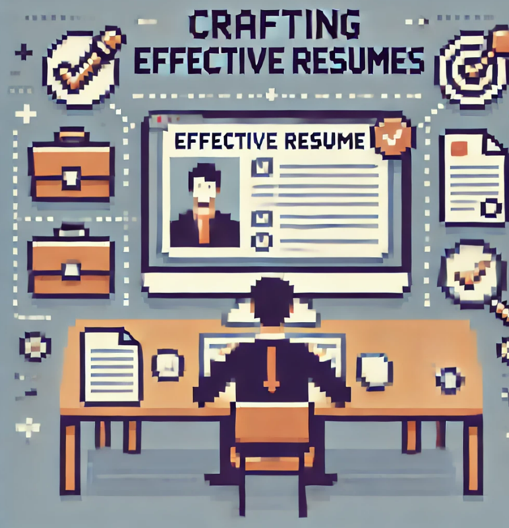
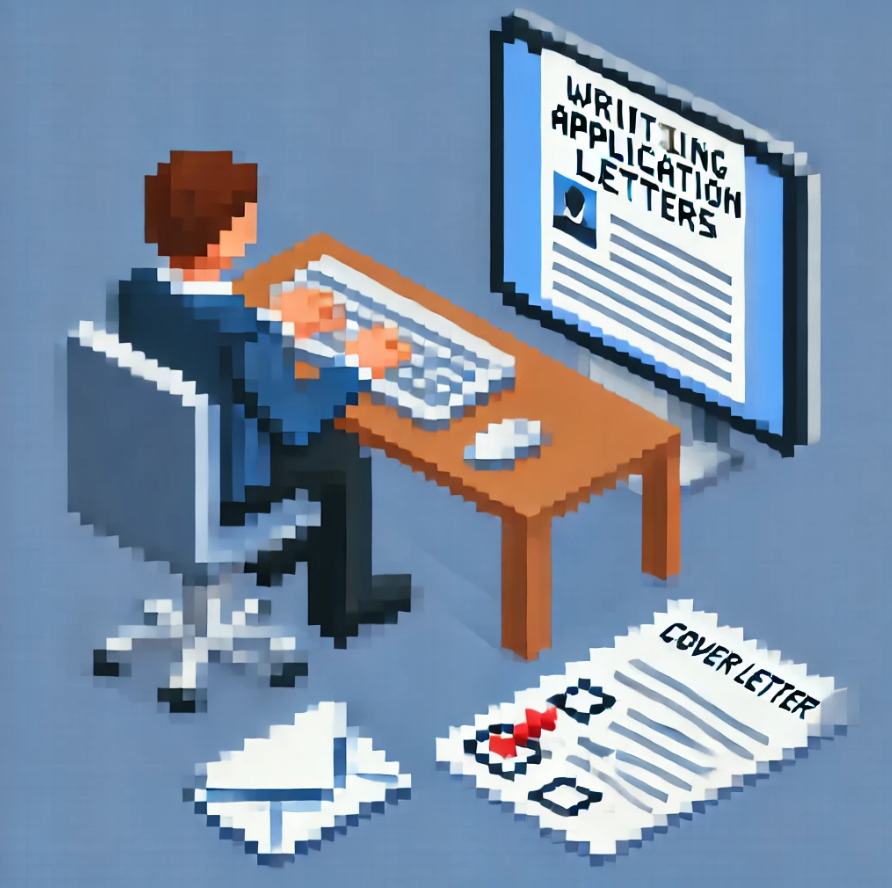

Unit 2-7
Unit 2: Job Announcements
Reading job postings helps you understand job expectations, required skills, and qualifications. Job announcements usually outline key responsibilities,such as customer service, marketing, or sales roles. Essential skills include communication, teamwork, problem-solving, and technical knowledge. Employers also look for experience in handling tasks like customer inquiries, processing transactions, and conducting market research. Understanding job postings allows you to tailor your resume and application accordingly.
Unit 3: Job Applications
A job application consists of several key sections that provide employers with information about your background. The Personal Information section includes your name and contact details. The Education section lists your degrees, institutions, and graduation year. The Work Experience section highlights your previous jobs, responsibilities, and achievements. The Skills & Qualifications section showcases relevant abilities required for the role. Finally, the References section provides contacts who can verify your qualifications and work ethic. A well-prepared application increases your chances of securing an interview.
Unit 4: Resumes
A resume presents your professional background in a structured way to highlight your strengths. There are different resume formats: Chronological (focuses on work experience, best for those with steady careers). Functional (emphasizes skills rather than work history, useful for career changers). Combination (mixes chronological and functional formats). Targeted (customized for a specific job). Creative (visually appealing, ideal for design or marketing roles). A strong resume includes Contact Information, Objective, Work Experience, Education, and Skills. It should be clear, well-organized, and tailored to the job.
Unit 5: Application Letters
An application letter, also known as a cover letter, introduces you to an employer and highlights your suitability for a job. The structure includes: Header – Your name, contact details, and date. Greeting – Addressing the hiring manager (e.g., "Dear [Hiring Manager's Name]"). Introduction – Stating the job title and why you're interested. Body – Explaining your qualifications, skills, and why you are a good fit. Closing – Expressing your interest in an interview and thanking the employer. A well-written application letter should be concise, professional, and aligned with the job requirements.
Unit 6: Job Interviews
Interviews are a critical part of the hiring process and can be conducted in various formats: Phone Interviews (used for initial screenings). Video Interviews (conducted via Zoom, Skype, or Google Meet). In-Person Interviews (face-to-face meetings at the company's office). Common interview questions include: Tell me about yourself. (Summarize your professional background). Why do you want this job? (Show knowledge of the company and role). What are your strengths and weaknesses? (Highlight strengths and address weaknesses positively). Describe a challenge you faced. (Use the STAR method: Situation, Task, Action, Result). Being prepared helps you make a great impression and increases your chances of success.
Unit 7: Workplace Communication
Strong communication is key to professional success. It enhances teamwork, productivity, and efficiency in the workplace. 1. Professional Email & Business Writing Emails should be clear, concise, and professional, using proper structure: subject line, greeting, body, and closing. Business letters and memos follow a formal structure to convey important information within an organization. 2. Workplace Communication & Telephone Skills Use active listening, professional tone, and clear messaging in all forms of workplace communication. Telephone etiquette includes answering promptly, greeting politely, and listening attentively to enhance customer and colleague interactions.